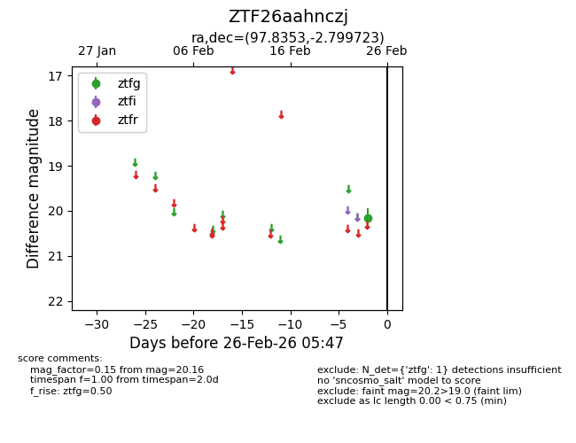
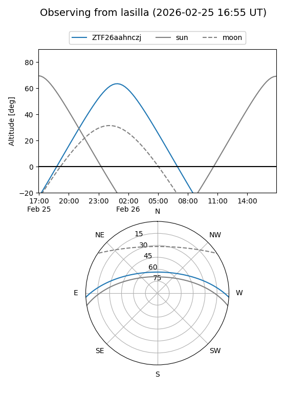
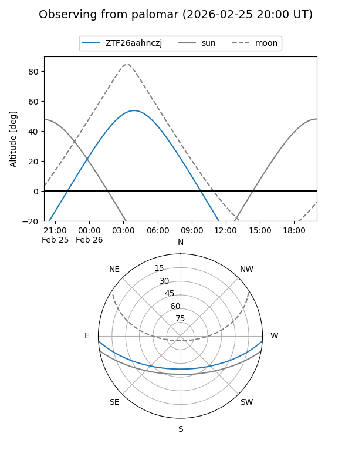

ZTF26aahnczj
Target ZTF26aahnczj at 2026-02-26 05:49
Aliases and brokers:
FINK: link
Lasair: link
ALeRCE: link
alt names
ZTF26aahnczj (ztf,fink_ztf)
Coordinates:
equatorial (ra, dec) = 97.8353,-2.79972
equatorial (HMS+DMS) = 06:31:20.47,-02:47:59.00
galactic (l, b) = (213.1384,-5.74616)
Flags:
Photometry:
last ztfg=20.16
1 ztfg detections
Lightcurve

Visibility


Additional plots